Introduction: The Lymphatic System
Presented by Justin Houck, PhD Student, Department of Animal Science — BMEN 615: Bioengineered Cellular Systems
Strip the anatomy away for a second and ask what this system is actually for. Blood capillaries are leaky by design — pressure pushes roughly 20 liters of plasma a day out into the tissues, and only about 17 of those liters get pulled straight back in by the venous side. The lymphatic system exists to handle the other ~3 liters, plus everything too large to slip back into a vein unassisted. Four jobs fall out of that one basic leak:
- Fluid balance (drainage). Blind-ended lymphatic capillaries pick up the interstitial fluid blood vessels leave behind. When this fails, tissue swells — that failure mode has a name: lymphedema.
- Protein & macromolecule return. Plasma proteins that leak out of blood capillaries are too large to re-enter a venule on their own; lymph is their only way back into circulation.
- Fat absorption. In the gut specifically, lacteals absorb dietary fat as chylomicrons and carry it to the thoracic duct, bypassing the liver on the first pass.
- Immune surveillance. Lymph carries antigen, pathogens, and antigen-presenting cells from tissue into lymph nodes, where patrolling lymphocytes can encounter them and activate — a node is a checkpoint, not just a filter.
None of this moves the way blood does — there is no central pump. Lymph is pushed along passively (by skeletal muscle contracting, and by breathing) and actively by the lymphangion: the vessel segment between two one-way valves, lined on the inside with a thin layer of cells and wrapped on the outside in smooth muscle that contracts rhythmically, segment by segment, like a chain of hands passing a bucket forward. Watch the whole circuit below.
Fluid and immune cells draining from the tissues, moving through lymph nodes for filtering and immune surveillance, and circulating on to the lymphatic organs — the three functions above, in motion, all at once.
Every stage above is exactly what a trained eye could already see under an 1890s–1950s light microscope — Maximow & Bloom's own plates, photographed directly from the 1957 textbook:
None of the three lab-on-a-chip papers try to rebuild the whole circuit above. Each one isolates a single piece of it — the leak, the pump, or the growth of the network itself — and asks whether that piece can be reproduced, measured, and manipulated outside the body.
The late 1950s and early 1960s were the final years of "pre-modern" immunology — this exact edition sits right before the field was transformed. Four specific claims in Chapter 11 read very differently today:
- A lymphocyte is just "a lymphocyte" — no visible way to tell one apart from another under the microscope.
- The function of the thymus is "largely unknown"; it shrinks with age, so some assumed it was a vestigial "graveyard" for dying cells.
- The small lymphocyte is described as an undifferentiated stem cell circulating in the blood, able to turn into other connective-tissue or blood cells — a direct extension of Maximow's own unitarian stem-cell theory.
- The reticuloendothelial system (RES): reticular cells and sinus-lining endothelial cells were believed able to transform directly into phagocytic macrophages.
- Lymphocytes split into distinct T-cell and B-cell lineages (plus NK cells), established through bursa/thymectomy experiments in the mid-1960s — identical under a light microscope, completely different jobs.
- Jacques Miller's thymectomy experiments (1961) showed the thymus is where T-cells mature — the immune system's "training school," not a graveyard.
- A small lymphocyte is a specialized immune cell on patrol, waiting to be activated by a specific antigen — not a generic stem cell.
- Macrophages are now known to be a separate cell lineage (monocyte-derived) from the structural reticular cells of the node — the modern "mononuclear phagocyte system" replaced the RES concept.
None of this is a knock against the book. It shows a useful distinction: anatomy — what a trained eye can see and draw — was worked out decades before physiology and immunology — how those same structures actually work at the cell and molecule level — caught up.
3D Microfluidic Model of Blood & Lymphatic Exchange
Comparing the Papers & Where This Research Is Headed
These four studies span 90 years, from whole-organ perfusion to lab-on-a-chip vessel networks. This page compares them side by side, and lays out specific open questions the next generation of this research would need to answer.
Scorecard
| What's Compared | Paper 1: Blood-Lymph Gray-Scherr 2026 |
Paper 2: Lymphangion Selahi 2022 |
Paper 3: L-Chip Sprouting Tronolone 2024 |
Paper 4: Whole Organ Carrel 1937 |
|---|
Old Experiments, New Instruments: Leaky Gut in Stressed Animals
Viewed through stress and reproductive physiology — e.g., Thomas H. Welsh, Jr., Regents Professor, Texas A&M AgriLife Research Faculty Fellow, Physiology of Reproduction — these four systems map onto a well-established pathway in livestock stress research: stress → a leaky gut barrier → bacterial endotoxin reaches blood and lymph → systemic inflammation → reduced reproductive performance. That is the same barrier-permeability problem these chips were built to study, just in a different epithelium.
During heat or psychological stress, reduced gut blood flow and elevated cortisol break down the gut epithelial barrier. Endotoxin (LPS) and bacterial products that would normally stay in the gut lumen cross into circulation — largely via the mesenteric lymphatics, bypassing the liver's first-pass filtering (the "gut-lymph pathway" of stress-induced systemic inflammation). That is mechanistically the same event paper 1 was built to watch directly: molecules and immune cells crossing a controllable barrier from one vascular compartment into an independent lymphatic network. The open question is whether that same chip architecture, barrier-rescue mechanism, and sprouting logic can be repointed at gut tissue and real stress hormones instead of TNF-α.
None of this requires new animals or new trials to start. The standardized molecular-weight tracer panel (10 / 70 / 2000 kDa) and the fold-change immune-trafficking analysis paper 1 uses could be retrofitted as a quantitative barrier-leak severity scale against archived samples from past heat-stress trials — a sharper, more directly comparable readout than the cruder in vivo gut-permeability markers (e.g., single-point blood endotoxin or FITC-dextran gavage assays) typically used in livestock stress physiology today.
Why the Body Needs a Second Circulation
Blood capillaries leak by design — roughly 20 liters of plasma a day move out into tissue, and only ~17 liters are pulled straight back in by the venous side. The lymphatic system exists to handle the other ~3 liters, plus everything too large to re-enter a vein unassisted.
- Fluid balance — blind-ended capillaries drain interstitial fluid; failure causes lymphedema.
- Protein & macromolecule return — leaked plasma proteins can only re-enter circulation via lymph.
- Fat absorption — gut lacteals carry dietary fat to the thoracic duct, bypassing the liver.
- Immune surveillance — lymph nodes are checkpoints, not just filters.
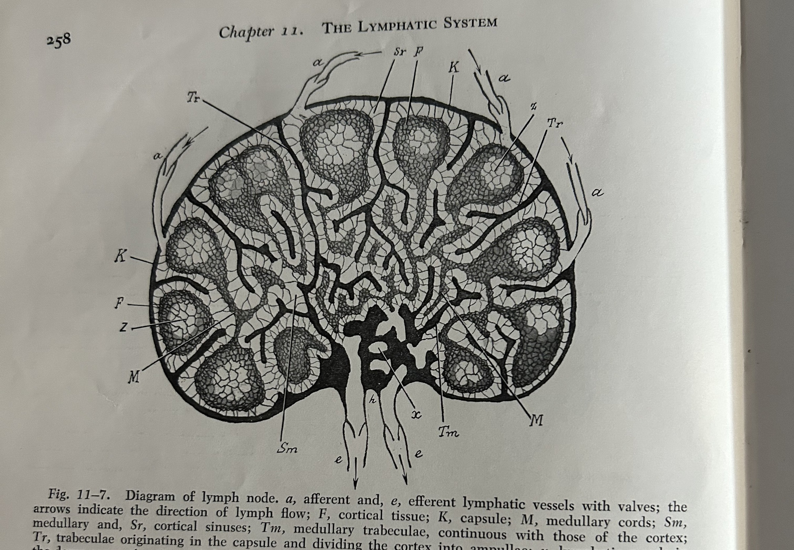
Each Chip Paper Isolates One Piece of the Circuit
None of the three lab-on-a-chip papers rebuild the whole circuit. Each isolates a single piece — the leak, the pump, or the growth of the network itself — and asks whether that piece can be reproduced, measured, and manipulated outside the body.
- 2022 mimics the pump — the lymphangion itself, the vessel segment that squeezes to push lymph forward between valves.
- 2024 mimics network growth — a new, dead-ended capillary sprouting from an existing vessel into a gel.
- 2026 mimics the leak & pickup — the moment fluid and immune cells cross from the blood side into the lymphatic side.
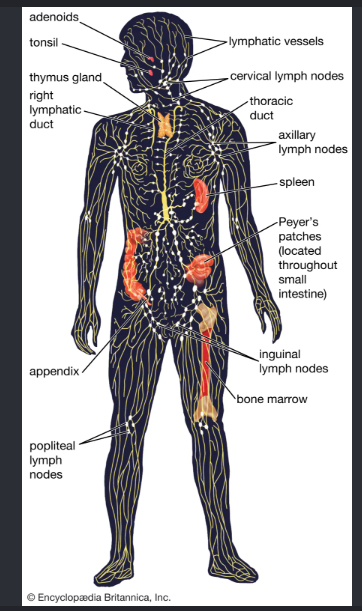
What a 1957 Microscope Could See — and Couldn't Yet Explain
- A lymphocyte is just "a lymphocyte" — no way to tell one apart from another under the microscope.
- The thymus's function is "largely unknown"; some assumed it was a vestigial "graveyard" for dying cells.
- The reticuloendothelial system: reticular and sinus-lining cells were believed to transform directly into phagocytic macrophages.
- Lymphocytes split into distinct T-cell and B-cell lineages — identical under a light microscope, completely different jobs.
- Jacques Miller's 1961 thymectomy experiments showed the thymus is where T-cells mature — a training school, not a graveyard.
- Macrophages are a separate, monocyte-derived lineage from the structural cells of the node — the "mononuclear phagocyte system" replaced the RES concept.
The Lindbergh Perfusion Pump
- Sole author Alexis Carrel; the apparatus was built by Charles Lindbergh, cited as a reference — not a co-author of this paper.
- An all-glass pulsatile pump driven by cycling gas pressure — no mechanical parts ever touch the perfusion fluid.
- Whole thyroid glands from cats, rabbits, and fowl kept alive 3–21 days; 6 days used for most main histology figures.
- Discovery: perfusion with serum alone preserves normal gland histology; adding Witte's peptone — not perfusion itself — drives epithelial hyperplasia.
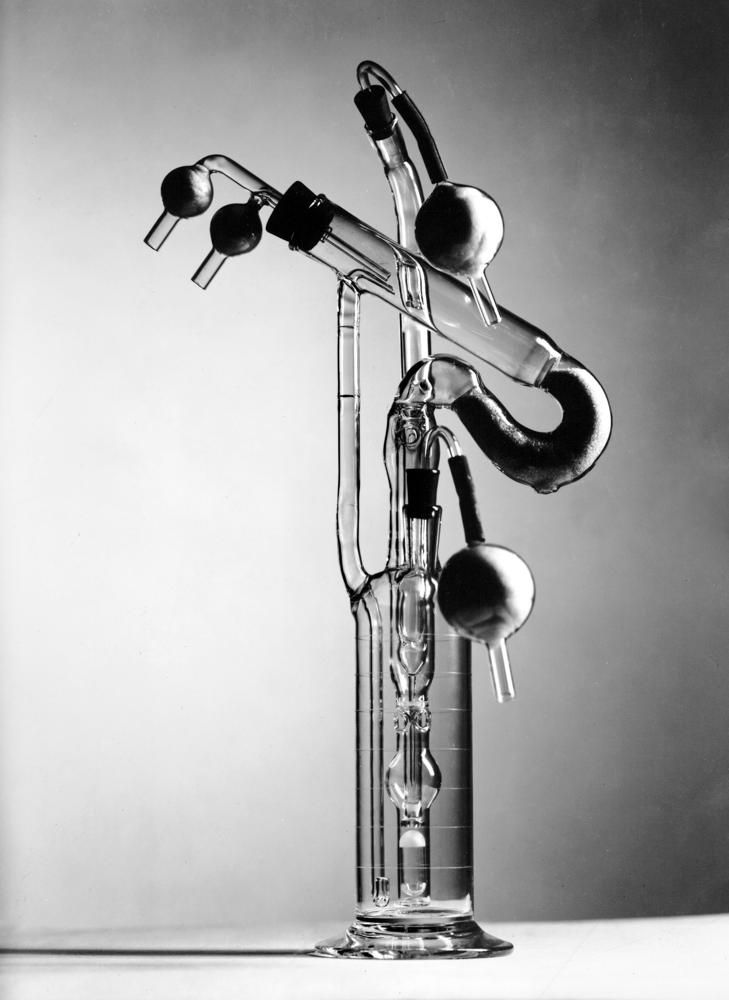
First Organ Kept Alive Outside the Body
- First proof a whole mammalian organ's physiology — not just isolated cells — could be sustained outside the body.
- A direct conceptual ancestor of today's organ-preservation and ex vivo perfusion technology used to store donor organs for transplant.
- Stopping rule: fluid pH fell from ~7.5 toward ~7.0–7.1 over about a week; the experiment was halted once pH dropped below 7.
- Limits: sealed glass chamber — no way to see inside while running; animal tissue only; minor vessel bleeding caused edema the authors state had "no ill effect on the gland."
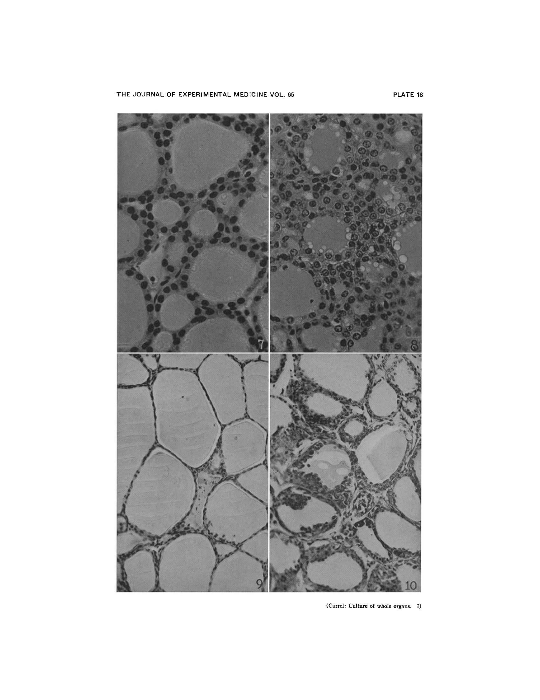
The Lymphangion-Chip
- Built via Gravitational Lumen Patterning (GLP): turning the chip vertical while the gel sets produces a round, evenly-walled channel.
- Co-culture: human lymphatic-vessel lining cells (LECs) inside, rat mesenteric muscle cells (LMCs) wrapped outside — a cross-species limitation the authors state directly.
- Tunable geometry: lumen diameter 400–800 µm via pressure; higher collagen concentration trims width by ~30% more.
- Final co-culture device: ~750 µm lumen, ~150 µm muscle layer thickness.
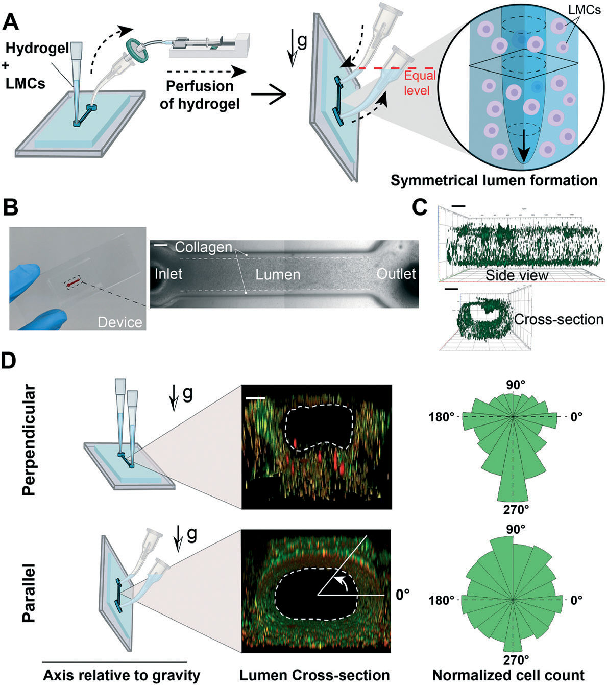
Cells Reorganize Under Shear — Together, Not Alone
- Monoculture LMC stays mostly axial: 31.4° (no flow) → 37.2° (low shear) → 42.9° (normal shear).
- Co-culture LMC shifts markedly more circumferential: 53.1° → 58.2° → 61.1°.
- Co-culture LEC shifts more axial as shear increases: 39.6° → 35.0° → 30.0°.
- Never reaches a literal 0°/90° — a real, measured shift, not a binary switch.
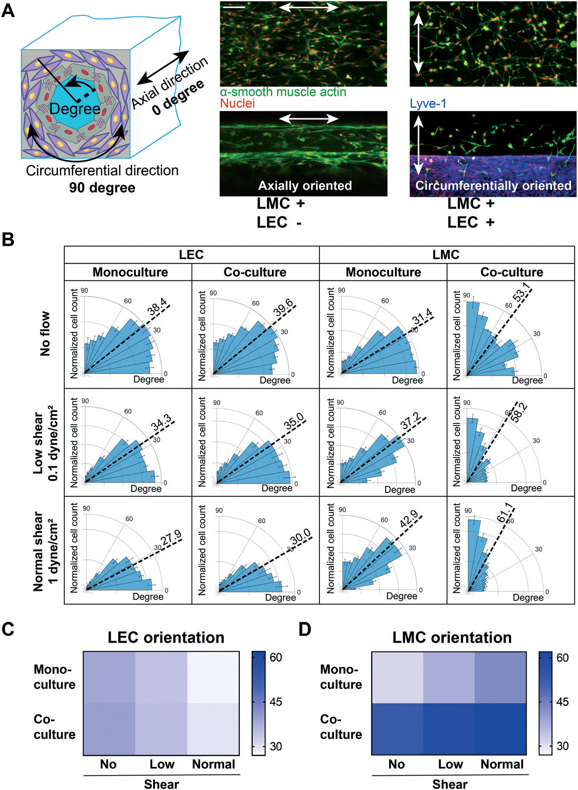
Muscle Cells Protect the Endothelial Barrier
- TNF-α alone (LECs only): barrier permeability rises sharply.
- TNF-α + LMC co-culture: barrier function stays "relatively conserved" (Fig. 7D) — first direct evidence of EC–muscle crosstalk protecting the lymphatic barrier.
- No prior in vitro model had ever paired these two lymphatic cell types.
- Opens a new therapeutic angle: LMC health, not just LEC health, as a lymphedema target.
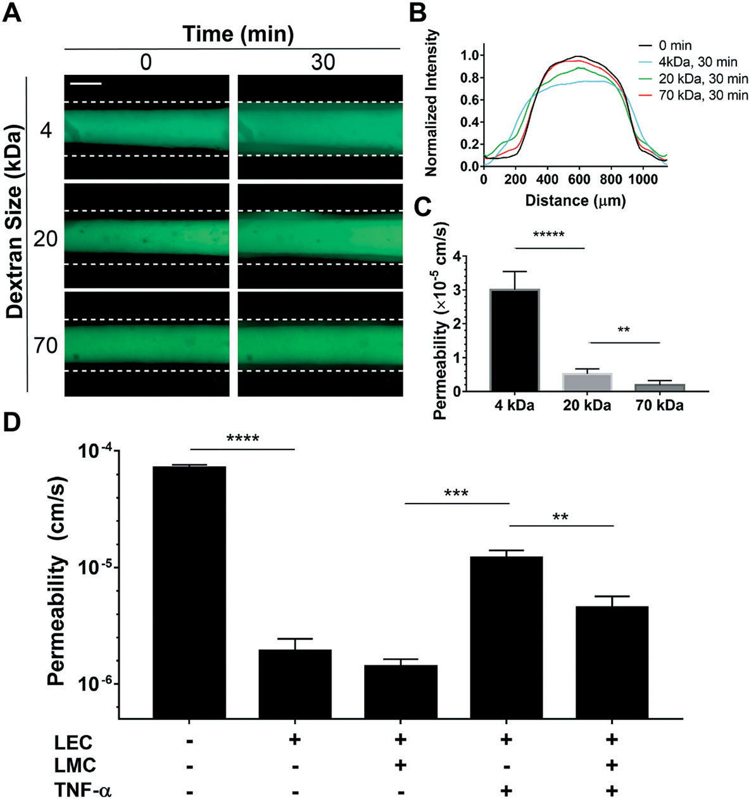
What's Left Out, and Where It Stops
- Tracked up to 96 hours (5 days); no post-Day-5 data or failure mode reported.
- A single straight vessel segment — no valves, bounded by stiff PDMS plastic.
- No pericytes included (the authors' own stated limitation).
- Cross-species pairing (rat muscle + human lining) limits direct translation to human biology.
Lymphangiogenesis-on-Chip (L-Chip)
- Three-channel design: a 1.5 mm fibrin gel chamber between a 200 µm parent lymphatic vessel and a growth-factor-gradient (GFG) channel.
- Interstitial fluid flow (IF), driven by a hydrostatic pressure head, moves from the GFG side toward the vessel side.
- Sprouting requires three factors together: pre-conditioned cells (pLF) + GFG + IF — removing any one sharply cuts sprouting.
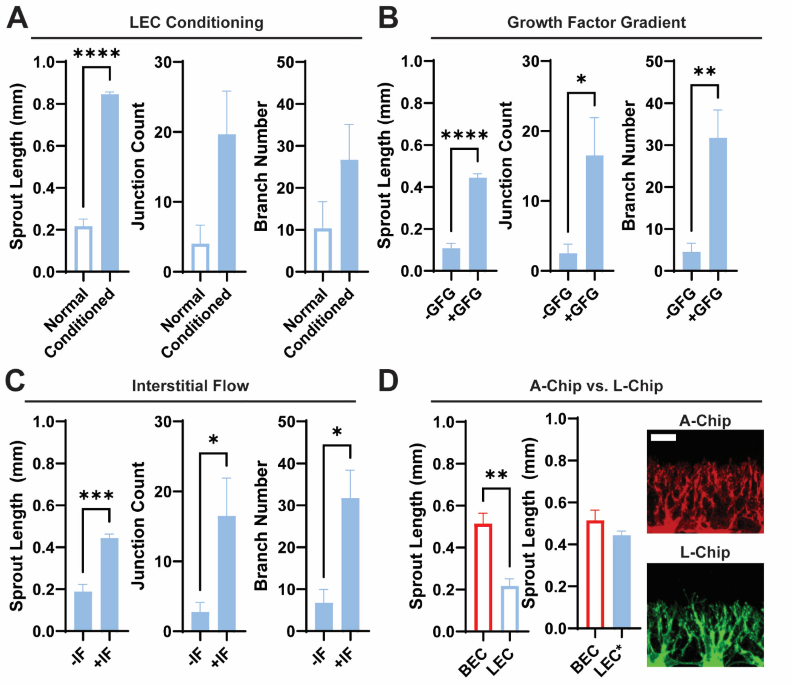
Four Days of Sprouting, Tracked Day by Day
- Day 1–4: sprouts progressively lengthen and branch past the retaining micropillars.
- Day 4 endpoint: sprouts approach ~1 mm — over 3× the parent vessel diameter, longer than prior published systems.
- Fully-conditioned sprouts reach ~0.85 mm vs. ~0.22 mm unconditioned by Day 4.
- Sprouts mature into tubular structures, with stalk cells connecting back to the parent vessel.
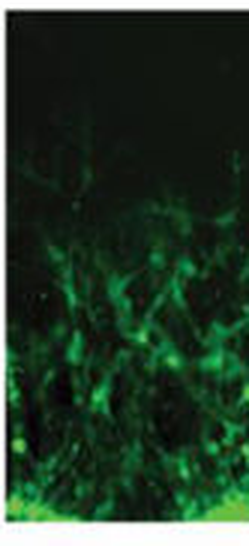
ESM-1: A Lymphatic-Specific Growth Driver
- Endocan (ESM-1) alone — without the rest of the growth-factor cocktail — is enough to strongly drive new lymphatic sprouting.
- The effect is lymphatic-specific: the same factor does not drive sprouting the same way in a matched blood-vessel (angiogenesis) chip.
- Gives researchers a concrete, selective molecular target for promoting or blocking lymphatic growth specifically.
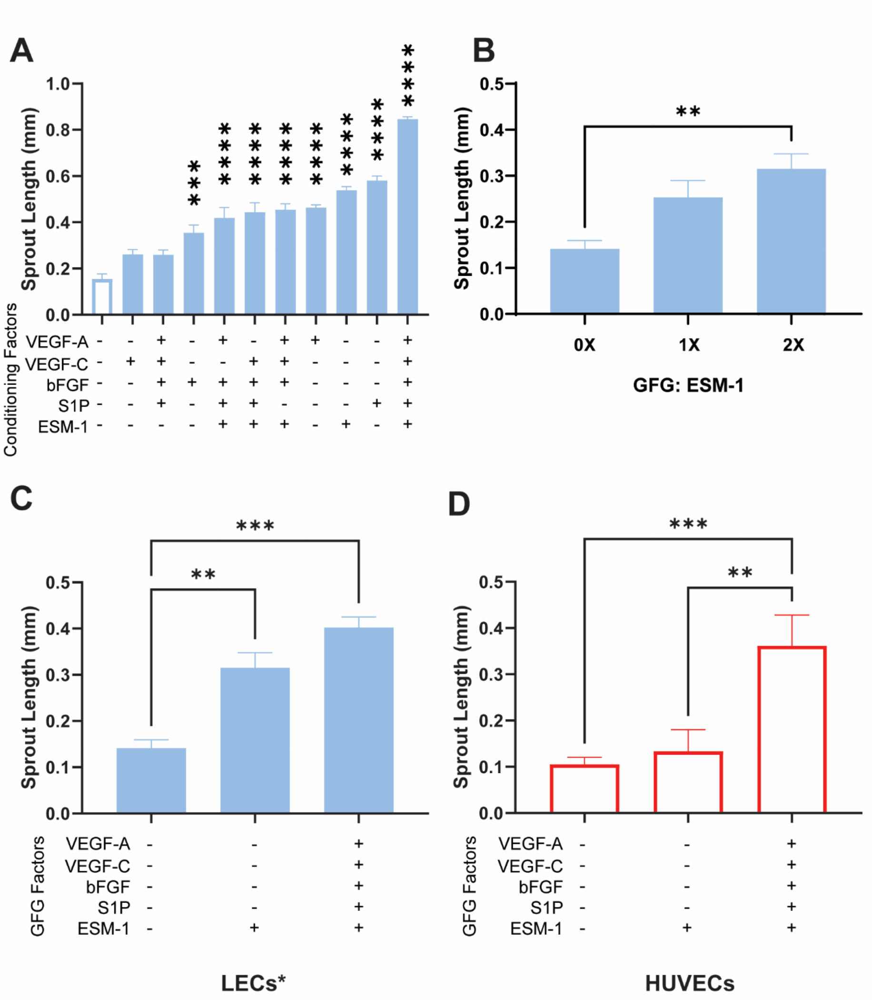
What's Left Out, and Where It Stops
- Fixed 96-hour (4-day) endpoint in every experiment; nothing reported beyond Day 4.
- Sprouts are dead-ended — no fluid actually flows through the newly grown branches.
- Missing supporting cell types: muscle cells, fibroblasts, pericytes, macrophages (the authors' own stated limitation).
Two Vessel Networks, One Shared Gel
- Tape-laminated chip, cast with needles: a blood-endothelial network and a lymphatic network self-assemble in one shared fibrin gel.
- Separated only by a thin, acellular fibrin interface — a continuous matrix, not a membrane. The networks never anastomose, but stay close enough to exchange molecules.
- Each network is independently perfusable via its own media reservoirs.
- Both networks mature over 5 days of daily media changes.
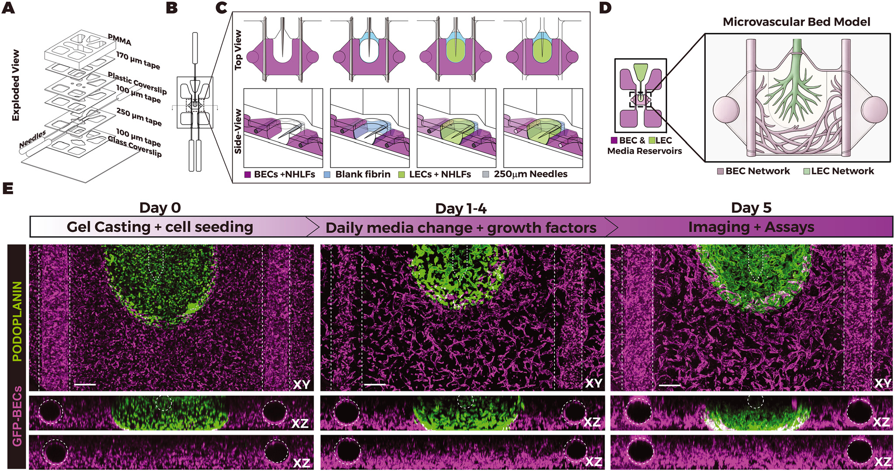
The Barrier Filters by Size
- 10 kDa and 70 kDa dextran tracers cross the gel into the lymphatic network readily.
- 2000 kDa dextran transport is sharply reduced, not fully blocked — the gel is size-selective, not an absolute wall.
- Both networks remain independently perfusable without compromising this cross-network exchange — a design feature, not just an outcome.
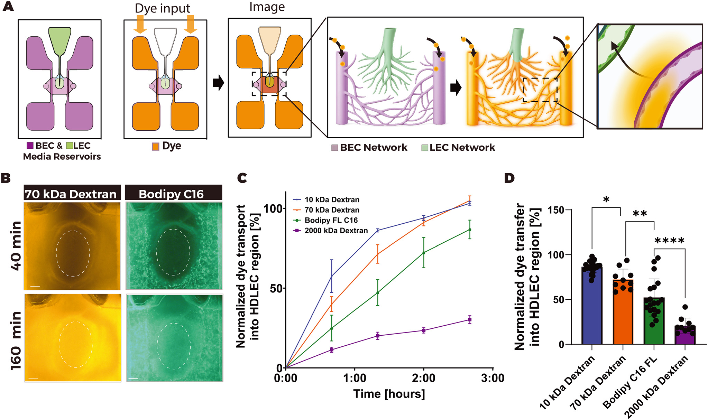
Inflammation Drives Immune-Cell Trafficking
- TNF-α pretreatment increases resting T-cell crossing into the lymphatic network 3.31-fold over control.
- Already-activated T-cells cross 5.89-fold over their own untreated baseline under TNF-α.
- First chip to watch, live, how inflammation drives immune cells from a blood network into an independent lymphatic network.
- Opens direct testing of anti-inflammatory drugs and tumor immune-evasion mechanisms on living human tissue.
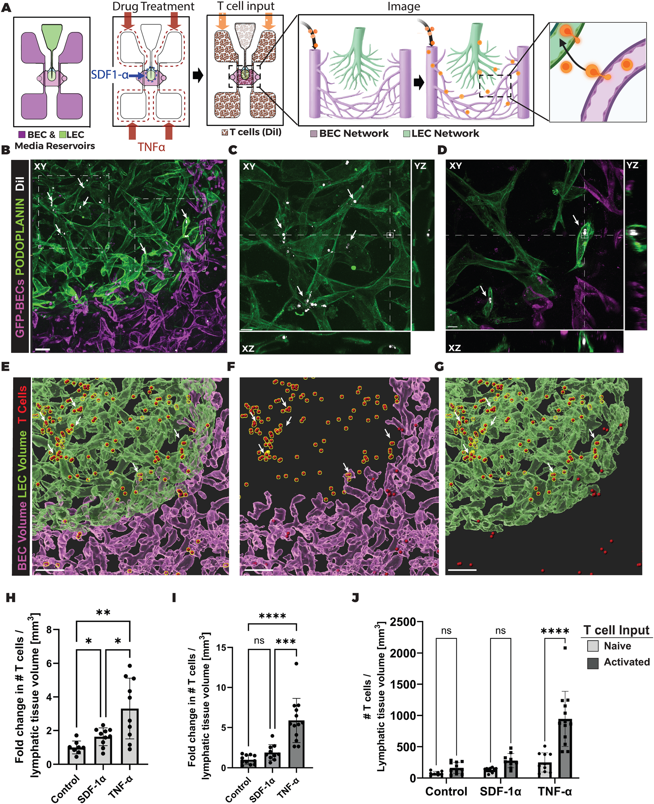
What's Left Out, and Where It Stops
- Day 5 is the standard testing point; assays run 3–4 hours each; nothing reported beyond Day 5.
- Built by hand, needle by needle, sealed with grease — no two chips are exactly identical.
- No pericytes included; flow driven by gravity and a rocker, not a recirculating pump.
90 Years, Four Systems
- 1937 — whole-organ perfusion, no cell-level view.
- 2022 — a single lymph-vessel segment, two cell types co-cultured.
- 2024 — guided growth of a new capillary sprout.
- 2026 — two independent vessel networks exchanging fluid and immune cells.
- Human cells instead of animal tissue
- Live imaging at the cell level
- One variable tested at a time
- Testing windows: 21 days → 4–5 days
- Pericytes and other supporting cells
- Whole-body, organ-to-organ connections
Old Experiments, New Instruments: Leaky Gut in Stressed Animals
Viewed through stress and reproductive physiology (e.g., Thomas H. Welsh, Jr., Regents Professor, Physiology of Reproduction, Texas A&M AgriLife): these four systems map onto a known pathway — stress → leaky gut → endotoxin reaches blood/lymph → systemic inflammation → reduced reproductive performance.
- Paper 1, rebuilt with gut epithelium: watch endotoxin-sized tracers cross a stressed gut barrier into lymph live, instead of inferring it from blood assays after the fact.
- Paper 2's barrier-rescue assay, re-run with cortisol/LPS instead of TNF-α, under chronic rather than single-pulse exposure.
- Paper 3 raises the question: does chronic stress remodel gut lymphatic drainage capacity itself, not just leak through it?
- Paper 4's one-organ, one-factor logic, updated: perfuse an isolated gut-epithelium-chip with a single defined stressor for a causal answer whole-animal studies can't cleanly isolate.
- Old data, new ruler: retrofit the 10/70/2000 kDa tracer panel and fold-change trafficking analysis onto archived heat-stress trial samples as a sharper severity scale.